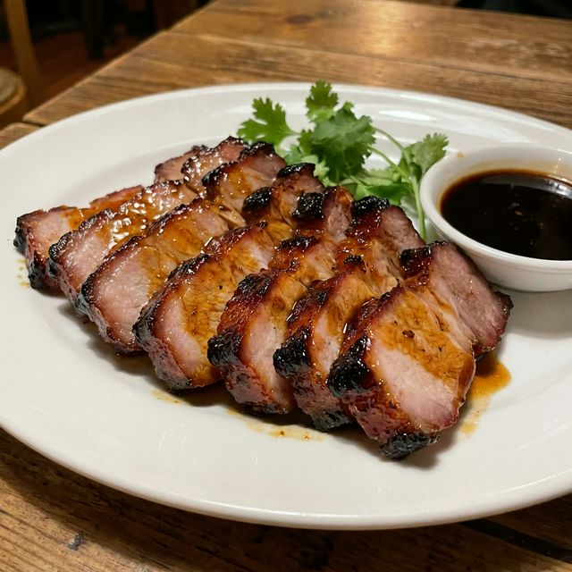

食材准备
- 主料： 梅花肉 (或五花肉) 500g
- 腌料： 叉烧酱 3勺, 耗油 1勺
- 腌料： 生抽 1勺, 蜂蜜 2勺
- 腌料： 料酒、南乳汁 (可选) 少许
- 腌料： 姜片、葱段 适量
烹饪步骤
腌制红肉
梅花肉切成长条。加入所有腌料抓匀。放入冰箱冷藏腌制至少12小时，最好24小时，使其充分入味。
预热烤箱
烤箱预热至200°C。烤盘铺上铝箔纸，放上烤架，将肉条整齐摆放在烤架上。
烘烤
放入烤箱烤约20分钟。期间取出肉条，均匀刷上一层腌肉的酱汁，翻面继续烤。
涂抹蜂蜜
最后5分钟，取出刷上一层蜂蜜（或蜂蜜混合少许水）。继续烤至表面出现微焦的糖化层（燶边），香气四溢。
切片装盘
稍稍冷却后即可切片。成品色泽红润光亮，肉质鲜嫩多汁，外皮略带焦甜，是地道的岭南风味。